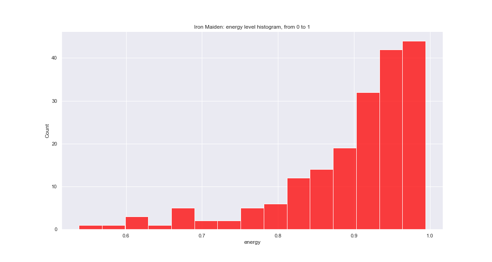

How happy and cheerful can Iron Maiden songs be?
Metalheads are known for angry and loud songs.
It's just a stereotype, of course, as the gender can range from very soft songs such as ballads like Fade to Black (Metallica) to the extreme speed and harsh vocals like those in Dead by Dawn (Deicide).
But what can we say about the average metal band?
Well, I didn't find a way to collect every metal band in the world and create a database. I'm studying data journalism, but I'm still just a journalist who knows…a little bit of data. A nd likes metal.
So I decided to analyze the most famous metal band ever and ask this stupid, but interesting question (at least for me): how happy and cheerful can an Iron Maiden concert be? How happy are their songs, in general? Will they follow the stereotype of the gender they kind of lead?
More than that. Could you dance in an Iron Maiden concert? (and I'm not talking about the mega funk version of 'The Trooper')
This project will try to answer that by using Spotify API, based on the valence and other variables. According to Spotify documentation, valence is a "measure from 0.0 to 1.0 describing the musical positiveness conveyed by a track. Tracks with high valence sound more positive (e.g. happy, cheerful, euphoric), while tracks with low valence sound more negative (e.g. sad, depressed, angry)."
I have removed duplicates and kept the most popular for each song. My final list has 189 tracks, which includes intros and some extra stuff.
Be aware: this is not exact science. It's just a simple data analysis for the Master Science in Data Journalism at Columbia Journalism School. It's not intended to offend anyone. I'm actually a huge fan of the band and play in a metal band of my own. :)
Fear of the…happiness?
Well, in order to offer happy songs in a concert, a band must have written happy songs. How does Spotify classify Iron Maiden's discography based on happiness?

Not much. This is how the discography is distributed. The mean valence for all the songs is 0.36 out of 1. Iron Maiden is not happy, at least not on average (whatever that means…)
It doesn't mean that the band can't produce songs
that would make Eddie smile. Ironically, the happiest
Iron Maiden song is Wratchild.
It tells the story about a young man who is searching for his unknown father. Does it look sad? Well, listen to the chorus and then compare it to other songs.
'Cause I'm a wrathchild
Well I'm a wrathchild
Yeah, I'm a wrathchild
I'm coming to get you ooh, yeah, yeah'
On the bottom there's an intro track, Churchill's Speech, and Lord of Light, from A Matter of Life and Death album.
At this point, it is important to mention that lyrics are not considered in Spotify's measure of valence. At least not according to the documentation.
Now let's take a look at how a full concert would look in terms of happiness. We based our chart on an "average setlist" containing the most common song sequence for their shows in 2019.
The question is: can you actually dance Maiden songs?
There's one particular song that would go great at a party, but not for shows. 'The Apparition' seems to be very suitable to dance, though you probably will never see them performing it live as they never played it during a concert. Some fans even argue that this is "easily their worst song".
So why are there so many sad songs? Do people enjoy it? For now, let's just compare it with popularity.
Maybe we should just ask Bruce Dickinson. Other factors might explain
how popular a song is, but happiness is
definitely not one of them. Most popular songs
like The Trooper and Fear of the Dark go to
opposite places in the chart and there is no
strong correlation between these two variables.
>
But there's one thing we can say for sure. The band definitely transmits a lot of energy in their songs. Most tracks are on the top of Spotify's "energy" bar (meaning "fast, loud and noisy") equal or higher than 0.8, in a scale that goes from 0 to 1.
One last thought: it seems that the band's songs are getting sadder as the years go by. Nothing beats the positive energy of the 80s and early 90s.
Now it's your turn: play with the data!